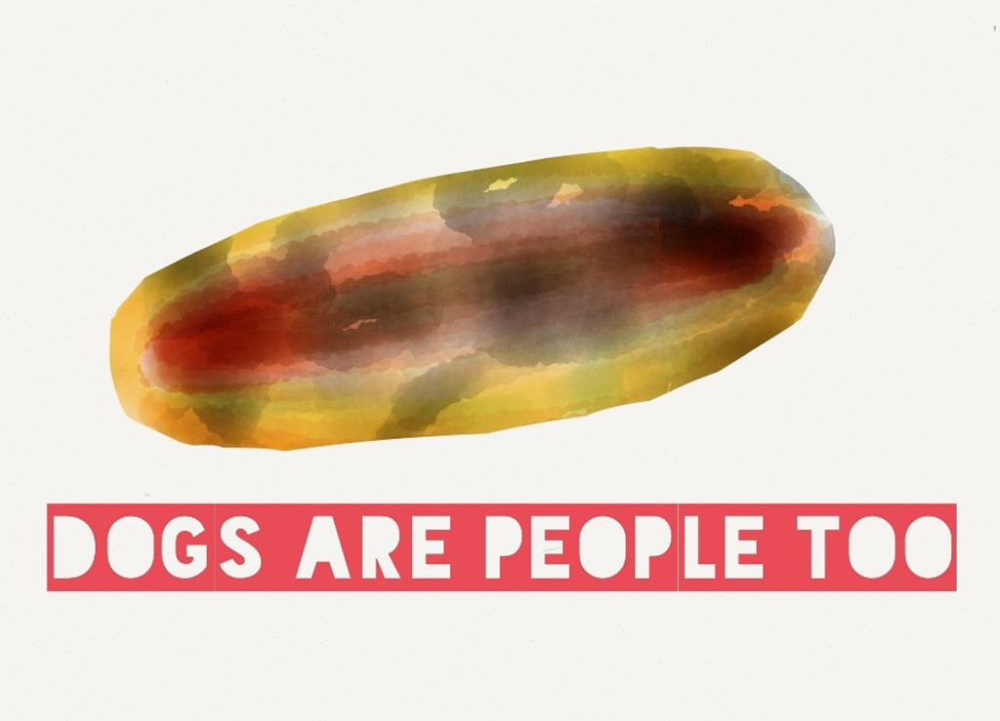

The Scratching at the Window: A Tale of Unimaginable Horror

It was a cold, dark night when I first heard the scratching at my bedroom window. I tried to ignore it, thinking it was just a branch from the tree outside, but the scratching persisted. Eventually, I got up to investigate and saw a pair of glowing eyes staring back at me through the glass.
I froze in terror as the scratching turned into pounding and the window began to crack. I could hear the thing on the other side, hissing and snarling, trying to break through. I could feel my heart pounding in my chest as I stumbled backwards, tripping over my own feet and falling to the ground.
As I lay there, helpless and trembling, the window finally gave way and the creature lunged into the room. It was a monster, unlike anything I had ever seen before. Its body was covered in matted fur and its eyes glowed with an unearthly light. Its teeth were long and sharp, and its claws were like knives.
It lunged for me and I could feel its hot breath on my face as it opened its jaws wide. I could see the saliva dripping from its fangs and I knew that this was the end. I closed my eyes and waited for the final bite.
But it never came. Instead, I heard a strange sound, like a low growling. When I opened my eyes, the monster was gone and I was alone in my room. I sat there for what felt like hours, unable to move or even scream.
The scratching and growling continued outside my window for the rest of the night. Every time I closed my eyes, I could see the monster's glowing eyes staring back at me. I never slept again. From that night on, I could only lay awake in my bed, listening to the scratching and wondering when the monster would come back to finish me off.
I know it sounds crazy, but I swear it's true. That monster is still out there, waiting for me, and I know that one day it will come back to claim me. And when it does, there will be no one to save me. The pit in the bottom of my stomach will be the last thing I feel before it devours me whole.
Related posts

Hot Dog: A Tale of Origination
Hot dogs originated in an area of Europe once known as Germany in a time when humans scavenged the leftovers…

Horrorscopes for the Week of September 15th
Aries Your intestinal fortitude will be put to the test by weeks end. Fret not dear Aries those parasites can’t…
You Will Be Horror-Struck When You Find out How This Boy Lost His Emotions
Dear Doctor: This holiday season was very busy. I worked many overtime hours due to the Christmas rush as well…

Horrorscopes for the Week of October 19th
Capricorn- Remember it is better to kick someone in the back than to punch him or her in the face.